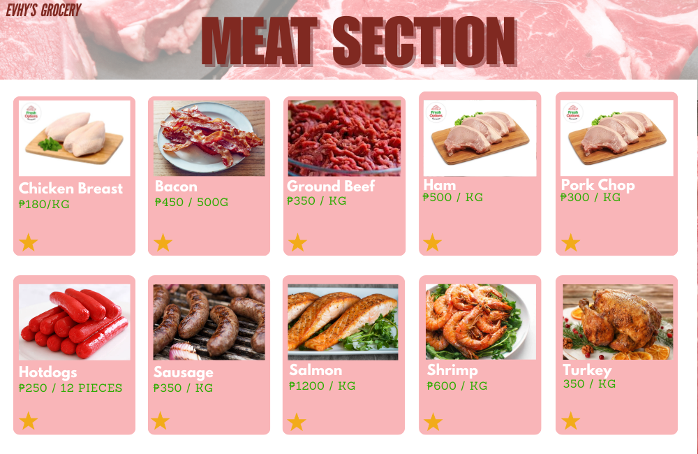

Rock Pawper Scissors is a fun, playful twist on the classic game of
Rock, Paper, Scissors, designed with a charming pet theme. In this
version, players face off against the computer, choosing between three
actions: "Rock," "Pawper" (Paper), and "Scissors," each represented by
adorable pet-inspired graphics. The game features a user-friendly
interface with colorful buttons and a vibrant visual style, making it
engaging for players of all ages.

Evhy's Grocery!
Evhy’s Grocery App is a comprehensive digital shopping platform that
provides users with an interactive experience for browsing and selecting
grocery items across various categories. While this example showcases
the Meat Section, the app includes a wide range of grocery sections,
such as Vegetables, Spices, Drinks, and more, ensuring that users have
access to a full shopping experience from their device.
NU ATM System
The NU ATM System is a digital banking application designed to simulate
essential ATM functionalities for user convenience and financial
management. Developed as a standalone application, it allows users to
perform basic banking operations, such as checking their balance,
depositing funds, and withdrawing cash, all through a secure,
user-friendly interface.
Custom MP3 Player
The Custom Retro MP3 Player is a nostalgic yet functional digital music
player that brings the look and feel of vintage audio devices to life.
With a carefully designed retro-inspired interface, this project
combines the aesthetic charm of classic music players with modern
software capabilities. The MP3 player is perfect for music lovers who
appreciate a touch of the past while enjoying the convenience of digital
playback.